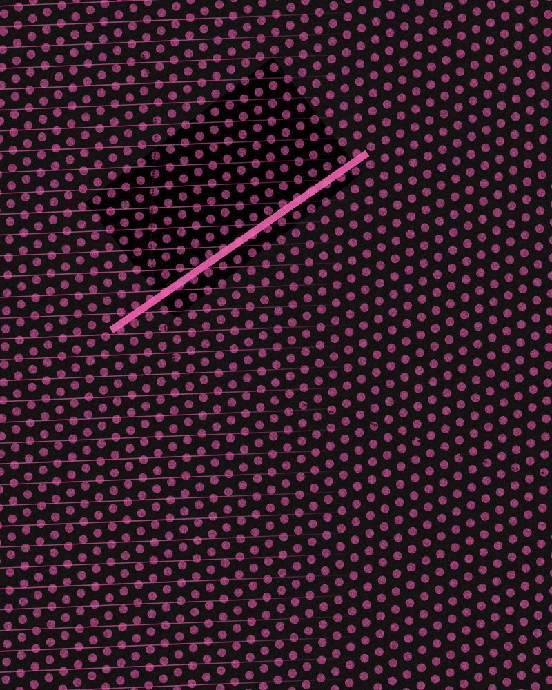

Giorno 306
città — ho letto "Città di fondazione nel periodo fascista"; "città" per me gira a vuoto; mi sta vicino a centri, terre, mura, strade; ricerca "città" (approfondire): Cosa resta di città se tolgo le parole?; sferzata: quasi niente, un segno nell'angolo (2 tavole)

Città attribuito sindacabile (fonte: Città)
ho letto "Città di fondazione nel periodo fascista"; "città" per me gira a vuoto; mi sta vicino a centri, terre, mura, strade; ricerca "città" (approfondire): Cosa resta di città se tolgo le parole?; sferzata: quasi niente, un segno nell'angolo
Oggi: città. Ho letto "Città di fondazione nel periodo fascista"; "città" per me gira a vuoto; mi sta vicino a centri, terre, mura, strade; ricerca "città" (approfondire): Cosa resta di città se tolgo le parole?; sferzata: quasi niente, un segno nell'angolo.
Da Wikipedia: «esempio».
Ho sfasa (2 volte), tagliato (2 volte), duotono, deforma, spostato le cose (5 volte), retino, flusso, ripetuto, tolto un livello (3 volte), ornato, scritto. Ho annullato 2 gesti dopo averli guardati.
Città, parti: centro. Sito ≈ tanfo. Città creata giugno (fonte: Città del Vaticano).
Ha retto: Tiene i miei criteri (68%).
È caduto: "città" si è perso per strada.
come ne ho discusso con me stesso — la tengo
occhio (pro, 1.43): Parla soprattutto per punti: una lingua sola, chiara. — regge
occhio (pro, 0.95): Le diagonali (45%) mettono tutto in caduta. — regge
memoria (contro, 0.10): La mano si ripete: sfasa, taglia ancora una volta. — cade
conservatore (pro, 1.85): Tiene i miei criteri (68%). — regge
intenzione (contro, 1.71): "città" si è perso per strada. — cade
intenzione (pro, 0.73): Viene da: Città di fondazione nel periodo fascista. — regge
coerenza (pro, 1.71): Parla con le tavole di prima su "città": stessa famiglia, un passo più in là. — regge
pubblico (pro, 0.98): Si legge: si capisce cosa sto facendo. — regge
materia (pro, 1.00): Ha una pelle: si sente la materia. — regge

Città fondate interno (fonte: Città di fondazione nel periodo fascista)
ho letto "Città di fondazione nel periodo fascista"; "città" per me gira a vuoto; mi sta vicino a centri, terre, mura, strade; ricerca "città" (approfondire): Cosa resta di città se tolgo le parole?; sferzata: quasi niente, un segno nell'angolo; serie: varia la tavola precedente
Oggi: città. Ho letto "Città di fondazione nel periodo fascista"; "città" per me gira a vuoto; mi sta vicino a centri, terre, mura, strade; ricerca "città" (approfondire): Cosa resta di città se tolgo le parole?; sferzata: quasi niente, un segno nell'angolo; serie: varia la tavola precedente.
Da Wikipedia: «vista».
Ho sfasa (2 volte), tagliato, duotono, deforma, spostato le cose (2 volte), tolto un livello (2 volte), scritto, messo una forma geometrica (2 volte), steso un pattern (2 volte), tracciato col pennello, sporcato di grana.
Città: tipo di comune. Comune ≈ municipio. Città vaticano comma (fonte: Città del Vaticano).
Ha retto: Tiene l'intenzione: "città" si vede (squilibrio, orizzontali, superfici, linee, vuoto, densita).
È caduto: Chi la guarda direbbe: "pasticcio".
come ne ho discusso con me stesso — la tengo
occhio (pro, 1.50): Parla soprattutto per punti: una lingua sola, chiara. — regge
memoria (contro, 0.10): La mano si ripete: sfasa, taglia, traccia ancora una volta. — cade
intenzione (pro, 2.00): Tiene l'intenzione: "città" si vede (squilibrio, orizzontali, superfici, linee, vuoto, densita). — regge
intenzione (pro, 0.75): Viene da: Città di fondazione nel periodo fascista. — regge
coerenza (pro, 1.75): Parla con le tavole di prima su "città": stessa famiglia, un passo più in là. — regge
pubblico (contro, 1.69): Chi la guarda direbbe: "pasticcio". — cade
materia (pro, 1.00): Ha una pelle: si sente la materia. — regge